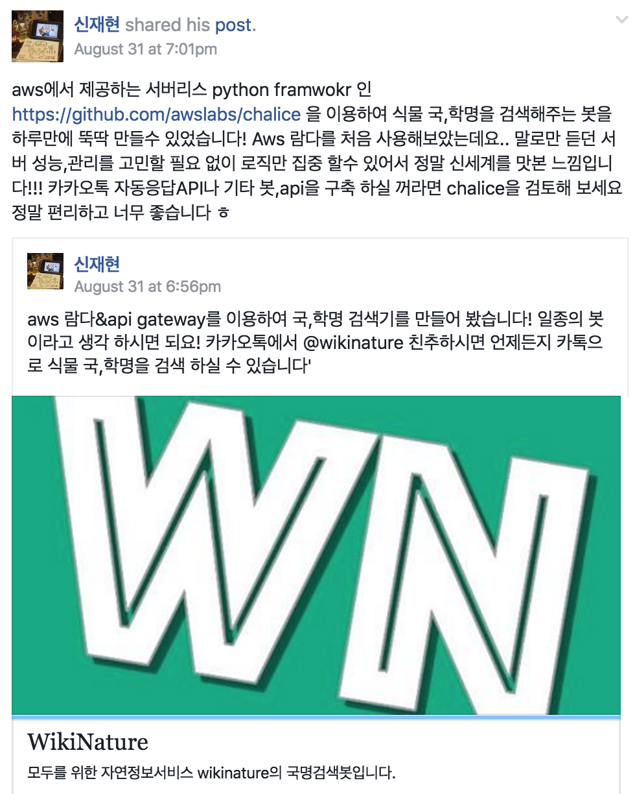

한국에서 일어나는 파이썬 관련 소식을 전합니다.
블로그
파이썬 퍼스트 클래스 함수 by 이상희 님
이상희 님이 새로운 파이썬, 장고 관련 블로그를 시작했습니다. 이 글 외에도 파이썬 클로저 설명 같은 파이썬의 개념들을 쉽게 설명하는 글이 올라오고 있습니다. 장고 강좌도 있고요.
FileField/ImageField를 통해 파일/이미지 업로드하기 by 이진석 님
장고에서 파일이나 이미지를 업로드하는 방법을 이진석 님이 설명합니다.
서비스
WikiNature
신재현 님이 aws의 람다 서비스를 쉽게 구현할 수 있는 chalice 라이브러리를 사용하여, 식물의 국명, 학명 검색기를 만들었습니다.

강좌
Django 초보 가이드
다양한 온라인 강좌를 제공하는 inflearn에서 장고 기본 강좌를 공개했습니다. 두 편 짜리 동영상 강좌로 장고 기본을 익힐 수 있습니다. 이 외에 초절정 파이썬 강좌, 파이썬으로 웹 크롤링 애플리케이션 만들기 등도 무료로 공개되어 있네요.
구인
써프라이즈 백엔드 개발자
써프라이즈라는 쇼핑 도우미 서비스를 운영 중인 엠비스에서, 파이썬/장고에 2년 이상 경험 있는 백엔드 개발자를 모집합니다.